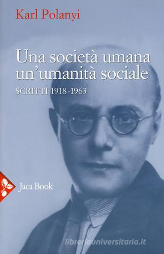
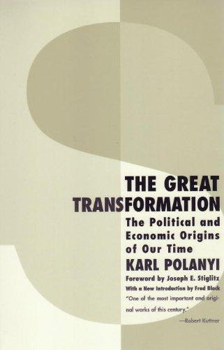
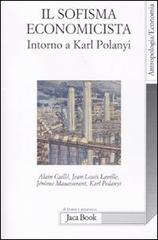
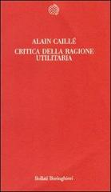
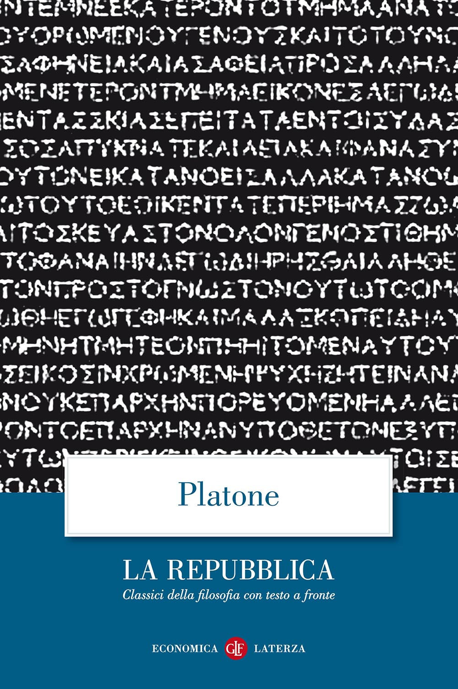
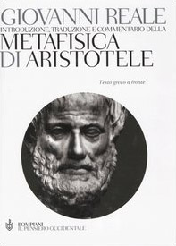
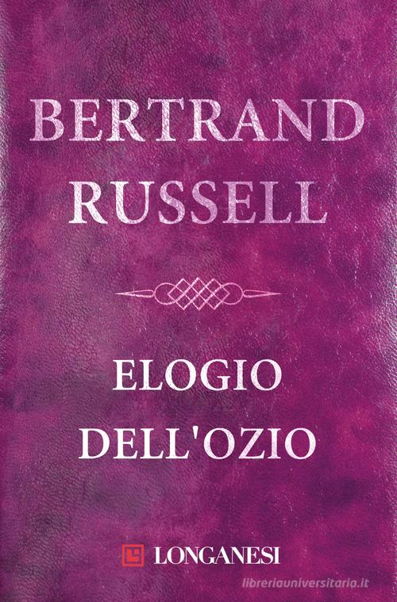
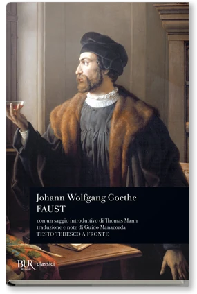

1:02:36 · 18 OPERE
Karl Polanyi: Una società umana, un'umanità sociale.
Il filo del discorso
La lettura di Una società umana, un’umanità sociale presenta un Polanyi interessato alla qualità della vita comune, alla formazione della coscienza e ai fini delle istituzioni. Il relatore affianca questa raccolta a La grande trasformazione e alla critica dell’utilitarismo di Alain Caillé: al centro non colloca una ricetta economica, ma la domanda su che cosa renda umana una società. Il saggio del 1918 sulla missione di una generazione fornisce il filo iniziale. Per il relatore una generazione entra nella storia quando riconosce un compito, invece di lasciarsi definire soltanto da età, consumi o classificazioni ricevute. La catastrofe della Prima guerra mondiale diventa così una crisi dell’orientamento morale. Il commento distingue l’accrescimento della potenza materiale dalla capacità di scegliere fini condivisibili e sostiene che la cultura renda possibili esperienze che il solo linguaggio amministrativo non sa esprimere. Le immagini della pianta nutrita, della ricetta comprensibile e della caverna platonica illustrano modi diversi di perdere o recuperare il rapporto fra parole, esperienza e giudizio. Il confronto con Russell e la sosta contemplativa dell’Infinito di Leopardi introducono il tempo necessario per pensare, leggere e immaginare. Platone ritorna nel Gorgia, attraverso il medico giudicato da bambini che preferiscono il cuoco: il piacere immediato può impedire di riconoscere ciò che giova. Il relatore estende questa tensione al ruolo dello Stato e al dibattito pubblico, polemizza con Popper e propone collegamenti con le controversie pandemiche. Queste analogie e valutazioni rimangono attribuite alla sua lettura; la scheda distingue i testi identificabili, i fatti riscontrati e le accuse prive di documentazione sufficiente. I dialoghi vengono soprattutto intesi come esercizi capaci di formare una persona, anziché come depositi di formule da ripetere. Una lunga parentesi affronta il pacifismo, la memoria di Schweitzer e Russell e gli interessi legati agli armamenti. Il discorso di commiato di Eisenhower costituisce un riferimento storico preciso; l’idea che il profitto sia il movente principale del riarmo è invece un’ipotesi dichiarata dal relatore. La scheda chiarisce la natura del piano SIOP e corregge l’origine dell’espressione conspiracy theory, anteriore all’assassinio Kennedy. Il ritorno a Polanyi mette infine a fuoco la perdita di significato e la riduzione delle persone a cose. Frankl offre un richiamo alla ricerca esistenziale di senso; il verso del Faust sull’atto, la parafrasi del racconto biblico e la conclusione delle Leggi di Platone aprono il problema dell’orientamento del sapere. Il nesso proposto dal relatore è che una grande quantità di conoscenze, da sola, non garantisca una convivenza migliore: contano la formazione del giudizio, la responsabilità verso gli altri e la capacità di riconoscere una direzione comune.
I libri nel discorso

Una società umana, un’umanità sociale. Scritti 1918-1963
Copertina: Jaca Book · Milano 2015 · ISBN 9788816412873
Copertina autentica dell’edizione del 2015, con titolo, autore e arco cronologico leggibili. Nessuna identificazione dell’esemplare mostrato fondata sulla sola trascrizione automatica.
Titolo Una società umana, un’umanità sociale, scritti 1918–1963 e Jaca Book letti nell’apertura. Raccolta riscontrata nella BNI, distinta da La grande trasformazione.
Passaggio 0:12 ↗ · Fonti e libro ↗
La grande trasformazione (The Great Transformation)
Copertina di una edizione inglese: Copertina inglese Beacon Press 2001, ISBN 9780807056431, prefazione Joseph E. Stiglitz e introduzione Fred Block. Originale 1944. Non copertina della traduzione Einaudi di Roberto Vigevani, prima uscita italiana 1974.
Beacon Press 2001. La immagine non è attribuita alla edizione italiana evocata nel filmato.
Titolo La grande trasformazione e editore Einaudi pronunciati esplicitamente.
Passaggio 0:34 ↗ · Fonti e libro ↗
Il sofisma economicista. Intorno a Karl Polanyi
Identificazione probabile
Copertina: Jaca Book · 2011 · ISBN 9788816409644
Copertina autentica della raccolta: tutti e quattro i nomi sono visibili. Il titolo non è letto nel parlato; l’identificazione del volume resta probabile. Immagine acquisita da Libreria Universitaria per l’ISBN catalogato.
Volume Jaca Book con saggio di Polanyi e contributi di Caillé, titolo non pronunciato: catalogo editoriale e composizione indicano probabilmente Il sofisma economicista. Identificazione dichiaratamente probabile.
Passaggio 1:05 ↗ · Fonti e libro ↗
Critica della ragione utilitaria. Manifesto del Movimento antiutilitarista nelle scienze sociali
Copertina: Bollati Boringhieri · 1991 · ISBN 9788833905815
Copertina autentica dell’edizione italiana catalogata; la specifica edizione posseduta dal relatore non è accertata.
Alain Caillé, titolo Critica della ragione utilitaria ed editore Bollati Boringhieri esplicitamente ricordati.
Passaggio 1:15 ↗ · Fonti e libro ↗La missione della nostra generazione
Identificazione probabile
Copertina della raccolta contenente La missione della nostra generazione: Saggio 1918 · nella raccolta Jaca Book 2015, pp. 55–67
L’immagine è la copertina dell’intera raccolta Una società umana, un’umanità sociale, non una copertina autonoma del saggio. L’edizione della raccolta è identificata bibliograficamente, l’esemplare del relatore non è accertato.
Primo saggio della sezione sulla crisi della Grande Guerra, 1918, e letture sulla missione delle generazioni: riscontro nel lavoro del curatore e nella bibliografia con pp. 55–67. Titolo non letto integralmente.
Passaggio 2:33 ↗ · Fonti e libro ↗
La Repubblica
Identificazione probabile
Copertina: Laterza · La Repubblica · edizione con testo a fronte di riferimento
Immagine associata all’ISBN di riferimento e controllata visivamente; edizione e traduzione non identificate come quelle citate o lette nel video.
Il riferimento alla caverna, alle ombre e al mutamento dello sguardo rimanda al libro VII della Repubblica; non è precisata un’edizione.
Passaggio 15:05 ↗ · Fonti e libro ↗
Codice di Hammurabi
Fotografia della stele: Stele paleobabilonese del regno di Hammurabi, XVIII secolo a.C.; esemplare SB 8, Musée du Louvre. Fotografia dell’oggetto, nessuna edizione libraria attribuita.
Fotografia integrale della stele SB 8 conservata al Louvre, reperita nel catalogo delle collezioni. È un’immagine dell’oggetto antico, non una copertina né una pagina di una traduzione. Respinta l’immagine promozionale con smartphone proposta dalla pagina introduttiva.
Il codice di Hammurabi è nominato nell’excursus sulla storia del diritto e dei testi. Non presentato come il primo codice mai esistito.
Passaggio 17:07 ↗ · Fonti e libro ↗
Metafisica
Identificazione probabile
Copertina: Bompiani · Il pensiero occidentale · 2004 · a cura di Giovanni Reale
Copertina autentica di riferimento, controllata visivamente. L’edizione non è identificata come quella usata nel video.
Il pensiero che pensa se stesso viene attribuito ad Aristotele: probabile rimando a Metafisica XII,9,1074b, non titolo letto nel parlato.
Passaggio 20:11 ↗ · Fonti e libro ↗
Elogio dell’ozio (In Praise of Idleness)
Copertina della raccolta che contiene il saggio: Longanesi · raccolta Elogio dell’ozio · 2004 · traduzione di Elisa Marpicati
Copertina della raccolta italiana omonima di quindici saggi, Longanesi, 2004. Il saggio annunciato è del 1932; non si attribuisce al filmato questa specifica edizione.
Bertrand Russell e Elogio dell’ozio vengono richiamati per il rapporto fra tempo libero, cultura e sviluppo della riflessione.
Passaggio 21:11 ↗ · Fonti e libro ↗
L’infinito
Identificazione probabile
Copertina dei Canti che comprendono L’infinito: Feltrinelli, Universale Economica I Classici, 2016 · Canti
Copertina dei Canti di Giacomo Leopardi, Feltrinelli 2016 a cura di Ugo Dotti. Il riferimento riguarda la singola poesia L’infinito; l’immagine non rappresenta una sua pubblicazione autonoma né l’edizione citata nel video.
La citazione riconoscibile di sedendo e mirando e degli interminati spazi identifica la poesia L’infinito.
Passaggio 22:26 ↗ · Fonti e libro ↗
Gorgia
Copertina: Gorgia, Bompiani, giugno 2001, a cura di Giovanni Reale, testo greco a fronte, 384 pagine, ISBN 9788845291111. Copertina ufficiale blu, bianca e verde acqua con titolo e autore; edizione di riferimento non identificata nel video.
Immagine autentica dell’opera, controllata visivamente; l’edizione di riferimento non è attribuita al filmato.
Il Gorgia è nominato; la similitudine del medico giudicato dai bambini su accusa del cuoco è riscontrabile in 521e–522a, con un precedente in 464d–e.
Passaggio 27:59 ↗ · Fonti e libro ↗
La società aperta e i suoi nemici
Identificazione probabile
Copertina: Armando Editore · Classici · 2018 · volume unico
Copertina autentica di riferimento, controllata visivamente. L’edizione non è identificata come quella usata nel video.
La frase attribuita a Popper sul paradiso in terra e l’inferno trova un riferimento probabile in La società aperta e i suoi nemici, II, cap.24. La lettura polemica del relatore non coincide automaticamente con la tesi antitotalitaria dell’autore.
Passaggio 31:46 ↗ · Fonti e libro ↗
Simposio
Copertina: Adelphi · Piccola Biblioteca 81 · 1979
Copertina autentica dell’edizione di riferimento, controllata visivamente. Non identifica l’esemplare letto o citato nel video.
Il Simposio è nominato durante la critica del relatore a un commentatore contemporaneo. L’identità del dialogo è chiara; l’accusa e il passo contestato non sono convalidati.
Passaggio 42:53 ↗ · Fonti e libro ↗
Discorso di commiato alla nazione (Farewell Address), 17 gennaio 1961
Prima pagina del comunicato originale del discorso di commiato del 1961: White House · comunicato stampa del 17 gennaio 1961 · prima pagina
Prima pagina del comunicato dalla copia conservata dalla biblioteca presidenziale. È un documento d’archivio, non una copertina di libro. PDF originale e relativa impronta conservati privatamente.
Il relatore indica il discorso di commiato presidenziale e il military-industrial complex: identificato il discorso radiotelevisivo del 17 gennaio 1961 nell’archivio presidenziale.
Passaggio 50:56 ↗ · Fonti e libro ↗
Man’s Search for Meaning (Uno psicologo nei lager)
Identificazione probabile
Copertina: Copertina Beacon Press, 1 giugno 2006, ISBN 9780807014295, prefazione di Harold S. Kushner e postfazione di William J. Winslade. Edizione inglese di riferimento, non la copia o la traduzione ricordata dal relatore; il collegamento al titolo resta probabile.
Immagine autentica dell’opera, controllata visivamente; l’edizione di riferimento non è attribuita al filmato.
Frankl e la ricerca di un significato nella vita sono richiamati nel contesto dei campi: identificazione probabile del libro come Man’s Search for Meaning, senza inferire altre opere dal solo tema.
Passaggio 55:10 ↗ · Fonti e libro ↗
Faust
Identificazione probabile
Copertina: BUR / Rizzoli · 2005
Immagine autentica dell’opera, controllata visivamente; l’edizione di riferimento non è attribuita al filmato.
La frase tedesca resa foneticamente dalla trascrizione automatica e tradotta in principio era l’atto è riconoscibile in Faust I, Studierzimmer. È una battuta del personaggio nella traduzione di Giovanni 1,1, non un trattato autonomo o una sicura professione di fede dell’autore.
Passaggio 1:00:38 ↗ · Fonti e libro ↗
Genesi
Identificazione probabile
Copertina: Einaudi, I libri della Bibbia / Einaudi Tascabili, 2000; introduzione di Steven Rose
Copertina dell’edizione autonoma Genesi, nella serie I libri della Bibbia, con introduzione di Steven Rose. Edizione scelta come riferimento iconografico; nessuna edizione è confermata nel video.
Il relatore contrappone al primato dell’azione il caos del racconto biblico: riferimento probabile a Genesi 1,1–2. In principio era il caos è una sua parafrasi interpretativa, non la formulazione letterale del testo.
Passaggio 1:00:49 ↗ · Fonti e libro ↗
Leggi (The Laws)
Copertina: Penguin Classics,28 giugno 2005,560 pagine; traduzione, introduzione e note di Trevor J. Saunders, prefazione di Richard Stalley. Copertina della traduzione inglese; nessuna edizione attribuita al relatore.
Immagine autentica dell’opera, controllata visivamente; l’edizione di riferimento non è attribuita al filmato.
Le Leggi sono nominate per la conoscenza ampia ma male orientata, più pericolosa dell’ignoranza: riscontro nel libro VII,819a. Nessuna edizione è indicata.
Passaggio 1:01:47 ↗ · Fonti e libro ↗